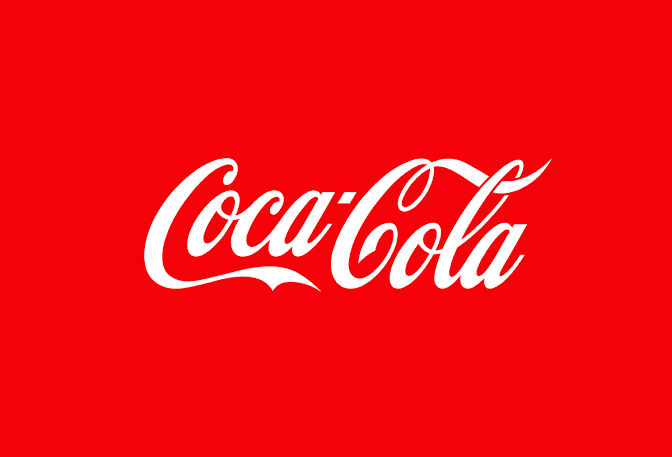

Produtos á venda
Sobre nós
A Coca-Cola Company foi fundada em 1892 em Atlanta, Georgia, Estados Unidos, por Asa Griggs Candler, que comprou os direitos da fórmula do farmacêutico John Pemberton. Desde então, a empresa cresceu para se tornar uma das marcas mais reconhecidas e valiosas do mundo.
-

Eventos


James Quincey
CEO
James Quincey é o CEO da Coca-Cola, liderando a gigante multinacional de bebidas com visão estratégica e inovação. Desde que assumiu o cargo, Quincey tem impulsionado a diversificação do portfólio de produtos da empresa, expandindo além dos refrigerantes tradicionais. Ele é conhecido por sua abordagem progressista em sustentabilidade, focando em práticas ecológicas e redução de resíduos plásticos. Sob sua liderança, a Coca-Cola tem intensificado esforços para se adaptar às mudanças nas preferências dos consumidores, incluindo o desenvolvimento de bebidas saudáveis e de baixa caloria. Quincey's direção tem sido crucial para a evolução e modernização da marca, mantendo-a competitiva no mercado global.